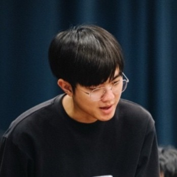

2017 - 2021
Chulalongkorn University
Bachelor of Engineering (Computer Engineering)
Kueakun Liwcharoenchai
I design, ship, and scale backend platforms focused on performance, stability, and measurable product impact.

I am a backend-focused engineer with experience delivering services that support high-volume traffic, clean service boundaries, and maintainable code. I enjoy translating product requirements into resilient architecture and mentoring teams toward better operational outcomes.
2017 - 2021
Bachelor of Engineering (Computer Engineering)
Sep 2021 - Present
Bangkok, Bangkok City, Thailand
May 2020 - Jul 2020
Bangkok, Bangkok City, Thailand
Best way to reach me is email. LinkedIn is also open for professional outreach.